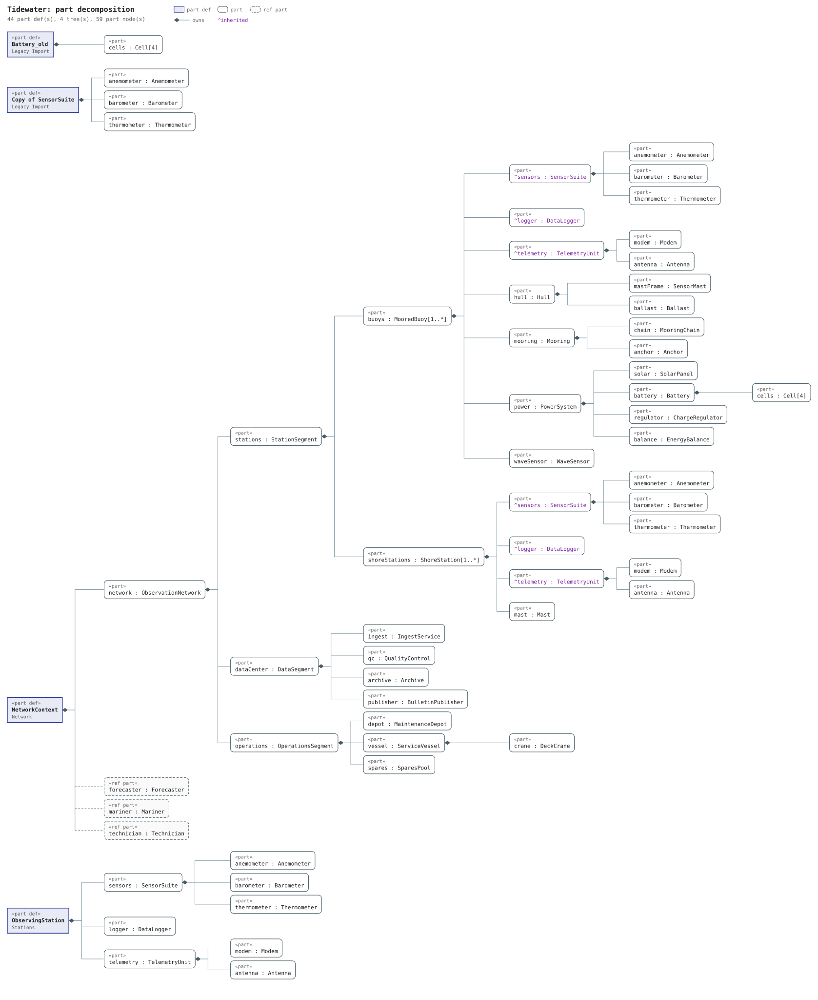
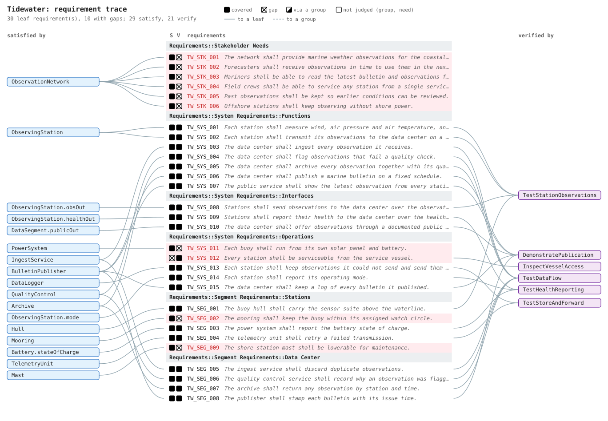
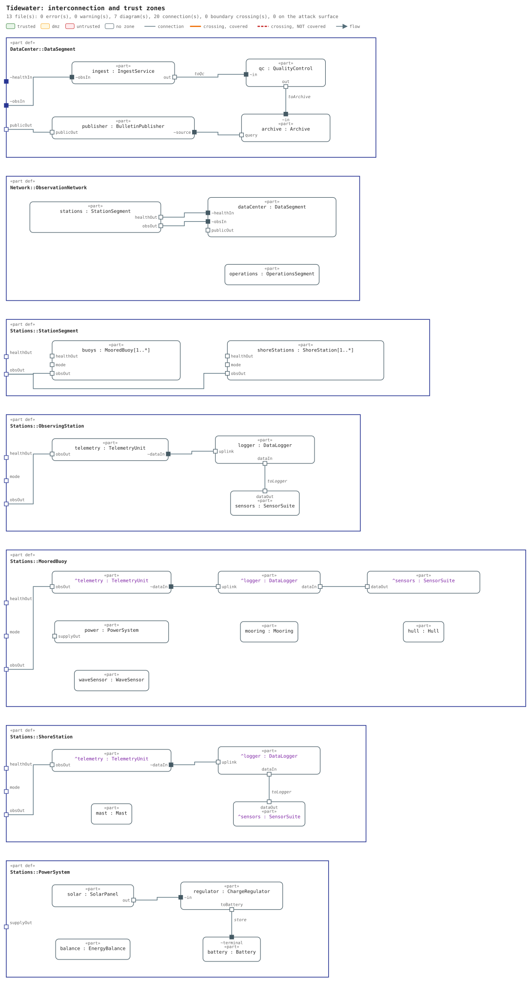
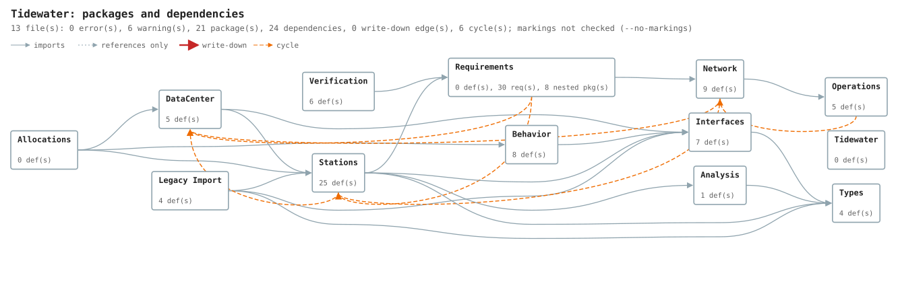
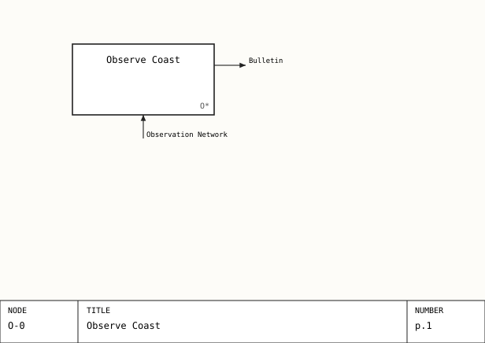
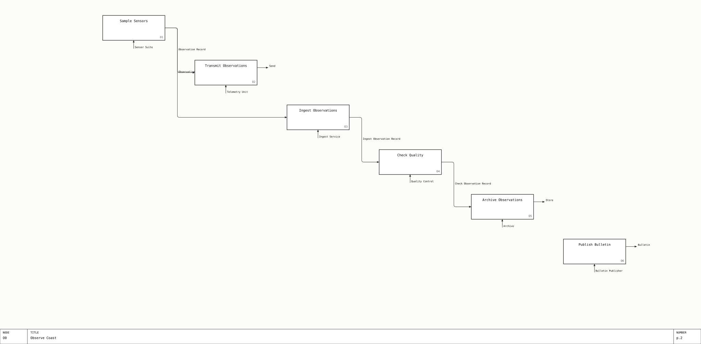

Tidewater model views
Prime drop 1, converted to SysML v2 text and drawn by the kit. Notional; nothing here is real.
Every picture below is generated from the model's text. Nobody draws or lays it out by hand, so it is never out of date. Make them in your own project with:
perl $KIT/tools/sysml/model.pl draw tree -o tree.svg # in Vim, from a .sysml buffer: \mw (:SysDraw tree)
perl $KIT/tools/sysml/model.pl draw trace -o trace.svg # \mq (:SysDraw trace)
perl $KIT/tools/sysml/model.pl draw ibd -o ibd.svg # \mi (:SysDraw ibd)
perl $KIT/tools/sysml/model.pl draw pkg -o pkg.svg # \mp (:SysDraw pkg)
perl $KIT/tools/sysml/model.pl idef0 # docs/idef0/plates.html and svg/; in Vim :!perl $KIT/tools/sysml/model.pl idef0
# \mW opens the live viewer (wish bin/sysml-view.tcl) beside Vim

model.pl draw treeThe noun tree from ObservationNetwork down, with level tags where the model has them. tree-svg: 13 file(s), 44 part def(s), 4 tree(s), 59 part node(s), 1 warning(s)

model.pl draw trace --monoEach requirement and what satisfies and verifies it; the planted gaps show as open shapes. trace-svg: 13 file(s), 30 leaf requirement(s), 10 with gaps, 0 warning(s)

model.pl draw ibdParts and the connections between their ports, one diagram per part def that has connections. 13 file(s): 0 error(s), 0 warning(s), 7 diagram(s), 20 connection(s), 0 boundary crossing(s), 0 on the attack surface

model.pl draw pkgThe v1 spider web: every package, its imports and references, and the dependency cycles (dashed). 13 file(s): 0 error(s), 6 warning(s), 21 package(s), 24 dependencies, 0 write-down edge(s), 6 cycle(s); markings not checked (--no-markings)

model.pl idef0The observation cycle as IDEF0 plates, from the verb tree under ObserveCoast and the allocations. A-0: the whole function as one box

model.pl idef0The observation cycle as IDEF0 plates, from the verb tree under ObserveCoast and the allocations. A0: its steps